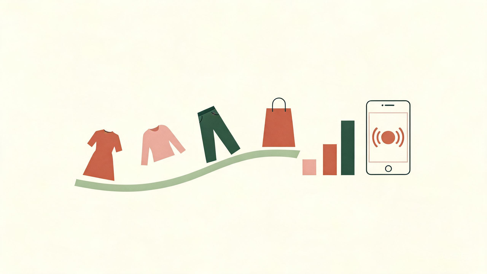

单品搭配手册：十个基础款的万能穿法
十个最常见、最高复用的基础款，每个都给"万能搭配 + 避雷细节"。会穿的本质，是把基础款穿出新意，而不是不停地买新款。可直接对照做成详情页的"一衣多穿"区块。
| 单品 | 万能搭配 | 避雷 / 细节 |
|---|---|---|
| 白衬衫 | 挺括纯棉 + 高腰直筒牛仔最基础；"塞衣角"或法式半塞（前塞后放）+ 卷袖到前臂中段；外搭西装 / 马甲；搭半裙（娃娃领 + 高腰直筒 = 约会；基础棉 + 百褶 = 通勤）。 | 微胖选开衩衬衫，下摆自然垂坠拉长比例。 |
| 牛仔裤 | 梨形选直筒 / 微喇 / bootcut，且深色 + 中高腰；高腰直筒把视线导向腿部；白 T + 牛仔 + 白鞋最省心。 | 避免过度做旧或过松。 |
| 阔腿裤 | 与上紧 / 上短平衡；高腰 + 垂顺面料；同色系上衣延伸纵向线条。 | 别过宽，裤腿宽于大腿约 5cm 即可，否则显垮。 |
| 半身裙 | 过膝 A 字遮胯；百褶显通勤知性；缎面显轻熟；针织半裙配同色上衣显高。 | X 裙型 / A 字 / 伞裙为 H 型与梨形加分。 |
| 连衣裙 | 衬衫裙 + 西装外套；素色裙 + 风衣；米白肌理西装 + 同色吊带长裙（温柔显高）。 | 按场景套用图 6-1 的一周公式。 |
| 针织衫 | V 领利于拉长颈线（苹果形友好）；粗棒针配真丝裙做材质对比；开衫作叠穿减膨胀。 | 可作内搭提亮整体造型；H 型选驼色镂空款增加女人味。 |
| 西装外套 | 内搭衬衫 / 同色马甲 / 连衣裙均可；米白 / 浅色西装 + 同色吊带长裙温柔显高；通勤叠穿同色马甲 + 珍珠项链 + 黑乐福鞋。 | 亮色外套肩要够宽才"撑得起来"。 |
| 风衣 | 敞开 = 松弛飒爽，系腰带 = 勾勒腰线、利落精致；卡其风衣 + 米色直筒裙同色系显高挑。 | 内搭修身针织避免臃肿；小个子配尖头踝靴露脚踝；H 型大衣对身材最包容。 |
| 鞋 | 尖头延长腿部线条（裸色最显腿长、黑色最百搭）；白 / 低帮运动鞋保持清爽；踝靴露脚踝显轻盈。 | 跟高 5–7cm 最舒适；平底选尖头也有延伸感。 |
| 包 | 作为"第三件单品"与最稳的 10% 点缀色；颜色与整体呼应，冷暖相撞制造重点。 | 通勤用结构包、休闲用 tote；简约廓形更耐久。 |
搭配公式库：九条可直接套用的公式
| 公式 | 做法 | 适用 |
|---|---|---|
| 上宽下窄 / 上窄下宽 | 宽窄是相对关系而非绝对紧身：上身留量感、下身轮廓清楚；或上身贴身、下身用阔腿 / 大廓形下装，平衡量感。 | 通用万能；大廓形上衣配短小下装。 |
| 上短下长 | 短上衣 + 高腰下装，把腰线提到肚脐处，直接拉长下半身占比并收小腹；小个子"塞衣角"穿出三七分。 | 显高首选；小个子。 |
| 松紧结合 | 全身一松一紧最稳；两件都松 = 休闲随意（周末），一松一紧更像"刻意为之"。 | 日常通勤、约会。 |
| 繁简平衡 | 上繁下简或上简下繁；印花 / 图案面积 ≤ 10%，"上花下素"。 | 印花单品、度假。 |
| 材质呼应 / 对比 | 硬 × 柔最出彩：皮衣 + 蕾丝半裙、粗棒针毛衣 + 真丝裙、软裙 + 硬朗牛仔外套。 | 秋冬层次、轻熟风。 |
| 风格混搭 | 正式 × 休闲：西装 / 风衣配牛仔裤、球鞋或皮革运动鞋，素色西装内搭 T 恤，让正装当代化。 | 通勤去班味、街拍。 |
| 配饰点睛（Third Piece） | 用包、丝巾、腰带、首饰作 10% 点缀色；配饰合计 ≤ 10%、点缀不超过 3 件，否则显脏显乱。 | 救活基础款。 |
| 叠穿层次 | 衬衫 + 马甲 / 西装；风衣 + 半裙同色系；露出领口、袖口、下摆形成"三层"；针织开衫作叠穿减膨胀。 | 季节过渡。 |
| 色彩呼应 | 让鞋、包、腰带或配饰与身上某一处颜色呼应，整体更连贯；尖头 + 裸色鞋最显腿长。 | 提升完成度。 |
穿搭的底层逻辑：四条原理，推导一切穿法
市面上的"穿搭技巧"看似成千上万，其实都收敛到四条底层原理。掌握它们，任何单品、任何身形都能自己推导出穿法，而不是死记搭配。
1 · 平衡宽度（Balance）
把视觉量感从最宽处移开。下半身宽就把量感上移，上半身宽就把量感下移，让整体轮廓接近"上宽下窄"或"上窄下宽"，而不是上下同宽。[15]
2 · 定义腰线（Define the Waist）
腰带、颜色分割、高腰单品、收腰缝线都是"造腰线"的工具。腰线在哪里，腿就从哪里开始——这是显高最直接的杠杆。[15]
3 · 用长度做文章（Length）
纵向长线条让人显高；"露出最细处"让人显瘦。脚踝、手腕、颈部、腰是四个最常被"露出来"的显瘦点；下装的连贯竖线能延长腿部视觉。[1]
4 · 三分法（Rule of Thirds）
全身视觉按 1:3 或 2:3 分段（短上衣 + 高腰下装，或长上衣 + 短下装），切忌 50/50 对半切——对半会把身体"拦腰截断"，显矮显敦实。[15]
身形诊断与扬长避短
flowchart TB
S["站在镜前，观察肩、腰、胯、腹的轮廓"] --> Q1{"腰腹是否明显
比肩胯更突出？"}
Q1 -->|是| O["苹果形 O 型
合身不紧绷 · V 领 · 暗色下装"]
Q1 -->|否| Q2{"肩宽 vs 胯宽？"}
Q2 -->|肩明显更宽| Y["倒三角 Y 型
上深下浅 · 上简下繁 · 上紧下松"]
Q2 -->|胯明显更宽| A["梨形 A 型
上露下遮 · 强调腰线 · A 字轮廓"]
Q2 -->|大致相当| Q3{"腰部是否有明显内收？"}
Q3 -->|有| X["沙漏形 X 型
收腰裹身 · 尽情秀曲线"]
Q3 -->|没有| H["直筒 H 型
用收腰单品与叠穿造腰线"]
梨形：腰细、胯宽、腿粗
原则：上露下遮 + 强调腰线，A 字轮廓。
上装：亮色、V 领 / 一字肩 / 方领，把视线重心上拉。
下装：A 字裙、阔腿裤、直筒裤、烟管裤，深色更藏肉。
避雷：紧身包臀裙、低腰裤、浅色阔腿裤。
苹果形：腰腹丰满、四肢纤细
原则：合身留松量，流畅线条转移注意力。
上装：V 领拉长颈线；避开紧身裹身、泡泡袖、宽肩。
加分：露小臂与小腿，简洁为主。
倒三角：肩宽背厚、腿部纤细
黄金公式：上深下浅 + 上简下繁 + 上紧下松。[15]
上装：V / U / 方领、落肩款柔化肩线。
避雷：垫肩、泡泡袖、大耸肩。
沙漏形：肩≈胯、腰明显
原则：尽情秀曲线，收腰 / 裹身版型。
面料：中等厚度；真丝裙、针织裙。
避雷：过于宽大的裙子。
色彩搭配体系
1 · 三色原则，进阶为 60-30-10
比例分配：主色约 60%、辅助色 30%、点缀色 10%。同色系不同深浅算同一种主色。[14][12]
2 · 同色系与邻近色
同色系：低饱和度款最安全也最显高级（雾霾蓝、米白、驼色系）。[3]
邻近色：色轮相邻色过渡自然，适合大面积组合。
3 · 对比撞色，只做小面积
不要大面积对撞：以一种为主色，另一种小面积点缀。冷色宜正式，暖色宜休闲。[2]
4 · 中性色做调和剂
黑白灰、米白、卡其、藏青可与任何鲜艳色中和。莫兰迪 / 大地色系包容度极高，更显瘦显贵；棕色系是"万能牌"。[12]
5 · 肤色冷暖，先判断再配色
- 手腕静脉偏绿 = 暖调；偏蓝紫 = 冷调。
- 金饰更衬 = 暖；银饰更清透 = 冷。
- 纯白布让脸更透亮 = 冷；米白让气色更好 = 暖。
- 珊瑚 / 橘调唇色自然 = 暖；玫瑰 / 梅子调更服帖 = 冷。
- 晒后易变棕 = 暖；易泛红不易变黑 = 冷。
落地：贴近脸的颜色用适合色；不合的颜色放到裤子、包、鞋。
6 · 四季色彩（Color Season）
| 型 | 特征 | 适合色 | 打底建议 |
|---|---|---|---|
| 春 | 暖 · 明亮 | 珊瑚、明黄、嫩绿 | 米白 / 驼 / 棕 |
| 夏 | 冷 · 柔和 | 薰衣草紫、粉扑粉、天空蓝 | 白 / 灰 / 藏青 |
| 秋 | 暖 · 深沉 | 驼色、芥末黄、卡其、砖红、橄榄绿 | 米白 / 驼 / 棕 |
| 冬 | 冷 · 鲜艳 | 纯白、黑、深藏青、品红、正红 | 白 / 灰 / 藏青 |
场景穿搭指南
同一件单品，换个场景就要换一套逻辑。五个高频场景，可直接对照做成店铺场景化专题。[16]
通勤 / 职场
选浅色、垂顺、微宽松；避开牛仔、紧身、厚重深色、吊带、超短裙。
公式：纯色垂感短袖衬衫 + 高腰西装裤；简约连衣裙 + 薄开衫；V 领针织 + 烟管七分裤。鞋选尖头（5–7cm，裸色最显腿长）。
约会
缎面 / 真丝中长裙、裹身裙、合身衬衫 + 定制长裤、一字肩 + 半裙。
要点：单色造型 + 一件 statement 耳饰即可。
休闲日常
白 T（塞好）+ 高腰阔腿牛仔 + 白运动鞋；卫衣 / 针织 + 锥形懒人裤。
加分：套装 + 一件"意外的第三件"（皮衣 / 大廓形衬衫）。
度假 / 旅行
纯白 / 纯色 look 最上镜；雪纺、亚麻等轻盈面料；选好走的鞋。
省心法：同色系搭配，拍照不挑背景。
正式场合
深蓝 / 全黑低饱和；H 型大衣对身形最包容；及膝裙；尖头高跟 / 牛津鞋。
配饰：从简但统一。
一周七天叠穿公式
衬衫 + 牛仔裤（外搭马甲 / 西装）；衬衫 + 半裙（塞衣角，梨形选 A 字）；卫衣 + 懒人裤（外披长风衣）；长风衣 + 半裙（同色系 + 尖头踝靴）；针织 + 半裙（材质对比）。
精髓：做减法。[13]
flowchart LR A["连衣裙 + 小外套
一周不重样"] --> B["周一 · 衬衫裙 + 西装外套（通勤）"] A --> C["周二 · 素色裙 + 风衣"] A --> D["周三 · 背心裙 + 无袖长外套（及膝）"] A --> E["周四 · 裹身裙 + 针织开衫（暖色叠穿）"] A --> F["周五 · 紧身裙 + 机车外套"] A --> G["周六 · 印花裙 + 牛仔外套（柔 × 硬）"] A --> H["周日 · 雪纺裙 + 工装外套"]
尺码指南与退货率控制

退货率是当前女装经营第一成本项，尺码不够准确是最可改善的成因。[21]
7.1 退货率有多高
趋势：国内女装退货率从 2019 年约 30% 攀升，2024–2025 年"较上一年再升约 10%"，直播场景尤为突出。[22][24][36]
7.2 高退货率从哪来
- 尺码不合 / 标准混乱（首要）：同一店铺"L 码"标准不一。[21]
- 货不对板、色差：直播打光过度导致"到手变色"。[21]
- P 图过度拉高预期。[22]
- 商家侧：价格内卷 → 降成本用差面料。[21]
- 平台规则放大：运费险 + 仅退款被当作"免费试衣间"。[21]
7.3 尺码表优化清单
- 双单位 + 测量示意图
- 加"参考体型"列（身高 / 体重 / 宽松度）
- 模特试穿数据 + 多角度（正 / 侧 / 坐）
- 一衣多穿演示
- AI 尺码推荐（身高体重体型 → 款式）
- 买家秀 / 真实测量图
天猫服饰大数据身形推荐与头部商家合作后退货率下降约 2–3 个点。[21]
7.4 退货的真实成本
直播带货话术
直播话术框架已相当成熟。微信小店给出时间配比，把"留人—讲品—价值—促单"整理成可填空模板。[27]
8.1 四段结构与时间配比
留人 20% — 讲品 35% — 价值 25% — 促单 20%；七成时间建立信任，三成促成交易。[27]
- 开场留人（30 秒）：①我是谁卖什么 ②今天什么福利 ③停留能得到什么。
- 互动框人："身高体重打评论区，我帮你推荐码数"。
- 塑品：面料术语翻译成人话（"高密度"→"挺括不易皱"）。
- 价值塑造：价格锚定 + 场景 + 信任保障前置。
- 促单：专属价 + 限时限量 + 行动指令，不超过 20%。
8.2 可填空话术模板
① 暖场 / 开场留人
"大家好，这里是【店铺名】直播间，专做【通勤/少女/大码】穿搭。今天新到【季节】新款，专享价全部在【X】元以内，还有【满减券】。"
② 互动筛选人群
"第一次来扣 1。身高【__】、体重【__】打评论区，我帮你推荐码数。自己穿扣 1，送人扣 2。"
③ 痛点刺激
"有没有这样的体验——【上班/应酬】一坐下，衬衫全是褶子？是不是觉得【显胖/显矮】，一直不敢穿【品类】？"
④ 产品讲解
"【面料术语】就是——摸起来更【挺括】，穿上不容易塌、不容易皱，省去熨烫。【工艺】就是——机洗不怕变形。"
⑤ 上身演示
"我现在穿【尺码】，身高【__】体重【__】，给大家看正面、侧面、背面。这条【单品】搭 T 恤是休闲风，搭衬衫是商务风，一条顶三条。"
⑥ 价格锚点
"你穿过专柜【五六百】一件的【品类】吗？同样面料同样工艺，我们直播间只要【一百多】。先别急，再看一个细节……"
⑦ 逼单 / 促单
"这款日常售价【298】，今天直播间只要【158】，只有这一场。这个颜色只剩最后【30】件，拍完就下架。"
⑧ 追单 / 收尾
"没抢到的朋友，我再上一波库存，只有【X】件。今天就播到这里；没抢到的关注我，明天上新第一时间通知。"
内容选题日历（季节 / 上新节奏）
通用主线：季前上、季中促、季末清。内容选题跟着货品节奏走。[32]
timeline
title 女装全年上新与内容节奏
1–2月 : 冬装清仓 · 新年新衣
3月 : 春季上新 · 3·8 主题
4月 : 春装收尾 · 夏装预热
5–6月 : 夏季主推 · 618
7–8月 : 夏清仓 · 早秋上新
9–10月 : 秋装旺季 · 冬装备货
11–12月 : 双11 / 双12 · 冬装主推
| 月份 | 货品动作 | 内容选题方向 |
|---|---|---|
| 1–2 月 | 冬装清库；2 月春款启动 + 春节预热 | "过年穿搭合集""红色系显白""返乡穿搭" |
| 3 月 | 春季黄金期 | "春季必备单品""通勤一周穿搭""3·8 女性主题" |
| 4 月 | 春装收尾、切入夏装 | "显瘦裙装""防晒穿搭" |
| 5–6 月 | 夏款主力 + 618 | "显白配色""清凉面料实测""出游/面试穿搭" |
| 7–8 月 | 夏清仓 + 早秋预售 | "反季捡漏""早秋先穿什么" |
| 9–10 月 | 秋装旺季 + 冬装备货 | "换季叠穿""风衣/针织搭配公式" |
| 11–12 月 | 冬装主推 + 双 11/双 12 | "羽绒服/大衣挑选""保暖套装" |
竞品与爆款搭配拆解
竞品 = 抢同一批客户、卖同类商品、价格带接近（±20%）的店铺。按四维拆解。[34]
flowchart LR C["竞品 / 爆款拆解"] --> D1["拆卖点
主图首句 · 详情页首屏"] C --> D2["拆评价
重点看差评 · 尺码 / 质量 / 物流"] C --> D3["拆内容
直播排品与话术"] C --> D4["拆数据
销量 / 价格 / 评分 / 发货时效"] D1 --> A["差异化落地"] D2 --> A D3 --> A D4 --> A A --> E["补短板 · 组套装 · 改主图 / 文案 / 价格"]
面向女装的拆解维度表
| 维度 | 具体看什么 |
|---|---|
| 版型 / 廓形 | A 字 / X 型 / H 型、收腰结构、肩线；爆款元素（V 领、高腰、A 字廓形） |
| 色彩 | 色系情绪、显白配色、低饱和大底色 |
| 面料 | 桑蚕丝 / 三醋酸 / 真丝混纺、垂坠感、肌理 |
| 卖点 | 主图首句、详情页首屏在卖什么（= 购买理由） |
| 价格带 | 与自身相差 ±20% 内才算直接竞品 |
| 模特表现 | 是否露脸、站姿能否看出真实版型、试穿者身高尺码 |
| 评论区痛点 | 差评集中的问题 = 你的机会点 |
| 搭配 | 一衣多穿、成套搭配、鞋包配色 |
高质量案例链接库
按用途分五类：A 灵感图库、B 媒体造型专题、C 素人与博主、D 品牌 / 电商搭配指南、E 穿搭教学。点击卡片打开原页面，点右侧复制按钮可复制链接。
提示：链接在当前页打开。想保留本页，请 Ctrl/Cmd + 点击，或用右侧复制按钮复制 URL。
A · 穿搭灵感图库（视觉为主）
B · 时尚媒体造型专题
C · 素人与博主穿搭
D · 品牌 / 电商搭配指南
E · 穿搭教学（色彩 / 身形 / 公式）
一页纸落地清单
压缩成一页可执行动作。按"内容 → 详情页 → 直播 → 选品"四条线，每周推进一项。
内容线
- 每套搭配做成 3–5 套合集，提高收藏
- 用"身形对症 + 场景合集 + 一衣多穿"养标签
- 选题对齐真实搜索词
- 按图 9-1 季节节奏排内容
详情页线
- 尺码表双单位 + 测量示意图
- 加"参考体型"列
- 模特试穿数据 + 多角度
- 补齐买家秀与真实测量图
直播线
- 按 20 / 35 / 25 / 20 配比排话术
- 开场 30 秒说清"我是谁/卖什么/什么福利"
- 面料术语翻译成人话
- 信任保障前置：7 天无理由 + 运费险
选品线
- 按四维拆竞品
- 把竞品差评点做成自己的卖点
- 单品对打改"组套装"
- 抄结构不抄素材